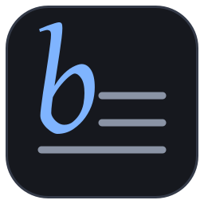

baluk notes
Заметки на Typst: красота печатных конспектов и удобство Obsidian. Формулы, рисунки и книги выглядят на экране так же, как в PDF.
Что это
- Заметки - обычные файлы
.typОни остаются у вас в папке и открываются любым редактором; приложение их молча не меняет. - Ссылки, граф, поискПереходы между заметками, обратные ссылки, граф хранилища, быстрый переход и поиск по тексту.
- Интерактив, которого нет в PDFГрафики с ползунками, вращаемые поверхности, пошаговые рисунки.
- Сборка на самом устройствеЯдро на Rust собирает заметки в HTML (светлая и тёмная темы) и PDF без сервера.
- Синхронизация между устройствамиСервер хранит файлы хранилищ и раздаёт изменения; заметки при этом работают и без связи.
Что работает сейчас
Приложение для Linux и синхронизация через этот сервер. Версии для Android и для браузера - в планах; открыть заметки прямо на этом сайте пока нельзя.
Попробовать
Исходный код и установка - на GitHub. Этот сервер - хранилище для синхронизации: приложение подключается к его поддомену api, вход по учётной записи.